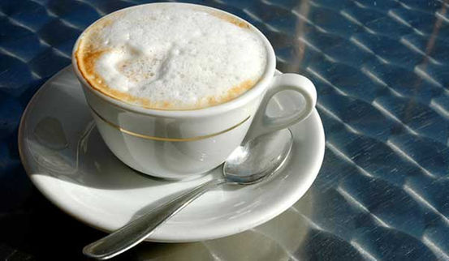

Scientists and epicurians have long made claims about this fragrant brew. Will it kill you or make you live longer? What makes the perfect cup? Is decaf really decaf? And who enjoyed the first cup of java?
1. Caffeine Can Kill You Despite its known plusses, coffee can be deadly. But you'd have to drink 80 to 100 cups in a hurry, health experts say. We advise not trying. In September 2015, the FDA warned of the dangers of powdered caffeine, a potent product that had recently burst into popularity.
2. Coffee Can Be Good For You A plethora of separate studies in 2014, 2015 and 2016 found coffee is good for your liver, may lower risk of heart attacks, might cut the risk of colon cancer and, as reported in the journal Circulation, one to five cups a day may generally reduce the risk of early death. A study released in March, 2016 found coffee associated with a reduced risk of multiple sclerosis (MS).
3. Caffeine Might Boost Female Sex Drive It worked on rats anyway. But researchers say in humans, coffee might enhance the sexual experience only among people who are not habitual users.
4. Caffeine Might Cut Pain Moderate doses of caffeine — the equivalent of two cups of coffee— can cut post-gym muscle pain, a small study found. But the research was done on people who were not regular coffee drinkers. A study in 2012 found those who drink coffee before sitting down to work at a computer had less neck and shoulder pain. There is not sufficient research, in big enough studies, to draw any firm conclusions on this possibility, however.
5. Caffeine Can Indeed Keep You Up at Night Health experts advise avoiding coffee for 6 hours before bedtime, since the effects of caffeine can last hours. A 2015 study found caffeine can confuse your body’s internal clock, confusing the signals that tell you when to sleep. Night shift workers may find coffee during work hours disrupts their daytime sleep, another study found.
6. Decaf Coffee Has Caffeine! Hey, what?! Yep: If you drink five to 10 cups of decaffeinated coffee, you could get as much caffeine as from one or two cups of caffeinated coffee, a study found.
7. Decaffeination Uses Chemicals Beans are steamed, so that dissolved caffeine rises to the surface, where it is washed off using an organic solvent called methylene chloride.
8. Caffeine Is Not The Bitter Culprit Caffeine is not the main bitter compound in coffee. Rather, the pungent perpetrators are antioxidants.
9. Great Coffee Depends on Roasting and Brewing When it comes to great flavor, coffee chemistry boils down to roasting and brewing. During roasting, oil locked inside the beans begins to emerge at around 400 degrees. The more oil, the stronger the flavor. Caffeine content goes up as the water spends more time in contact with the grounds, so regular coffee often has more of it than espresso or cappuccino. Darker roasts also yield more caffeine.
10. Coffee Was Discovered by Goats A millennium ago on a mountainside in Africa, a herd of goats kept a shepherd up at night after feasting on red coffee berries. The shepherd took his animals' discovery to some monks, and very long prayer sessions ensued. It's a good story, anyway. Bonus facts, since you made it all the way: A study shows that Americans get most of their antioxidants from their daily fix of java. One to two cups a day appear to be beneficial. Or, if you don't like coffee, you could try black tea, the second most consumed antioxidant source. Bananas, dry beans, and corn wrap up the top five.